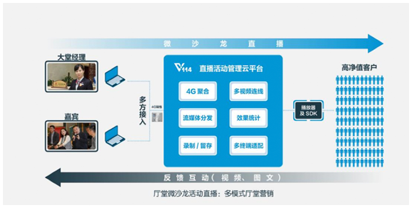

目前厅堂无有效方法缓解客户等待的焦虑情绪，不能对潜在客户进行产品营销，大堂经理管理能力有待提升。
面向营业厅大堂经理，大堂经理邀请场内、场外嘉宾进行专家谈访、金融知识解答等实时互动。一点发起，多点连线；跨域多人参与连线，文字互动收集需求；收录、回放，多次使用。有效缓解厅堂等待客户的焦躁情绪；识别潜力客户，促进产品营销；提升大堂经理自信心及厅堂管理能力。
可独立主办为沙龙，也多厅合办微沙龙。还可邀请嘉宾或代言人参与。
无需使用营业厅网络，通过4.5G直播背包或4G路由器保证沙龙展开。流量统付，价格低廉。
通过现场互动，或邀请客户亲朋好友参与，互动娱乐，客户参与感强。轻松营销和获客。
实时读弹幕（观众提问）；作为副主播，播报咨询；设置与大堂经理对话（产品卖点）；与大堂经理互动调侃（增加趣味性）。
覆盖任何地域；多终端同时接入；参与门槛低。
可通过微信、微博、网址、app、微信公众号等进行分享和传播，同时可通过扫描二维码进行分享，传播方便简单，获客便捷。
录播随时点播；一次沙龙多次回看。
大型金融企业厅堂及电信企业营业厅等，进行话题讨论和演讲，以及产品营销和获客。
